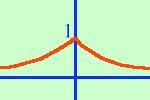

|
Disegnare approssimativamente il grafico per la funzione: y = e- | x | Il campo di esistenza e' tutto l'asse reale: C.E. {x inoltre la funzione e' pari e- | -x | = e- | x | quindi bastera' disegnarne solo una parte poi ribalteremo il grafico attorno all'asse y Partiamo dal grafico della funzione esponenziale  Se fosse da considerare
Se fosse da considerare y = e| x | allora dovrei considerare la parte di grafico con le x positive cioe' dall'origine in avanti,  invece la mia funzione y = e- | x | avra' sempre l'esponente negativo, quindi sara' la parte che si trova prima dell'origine |